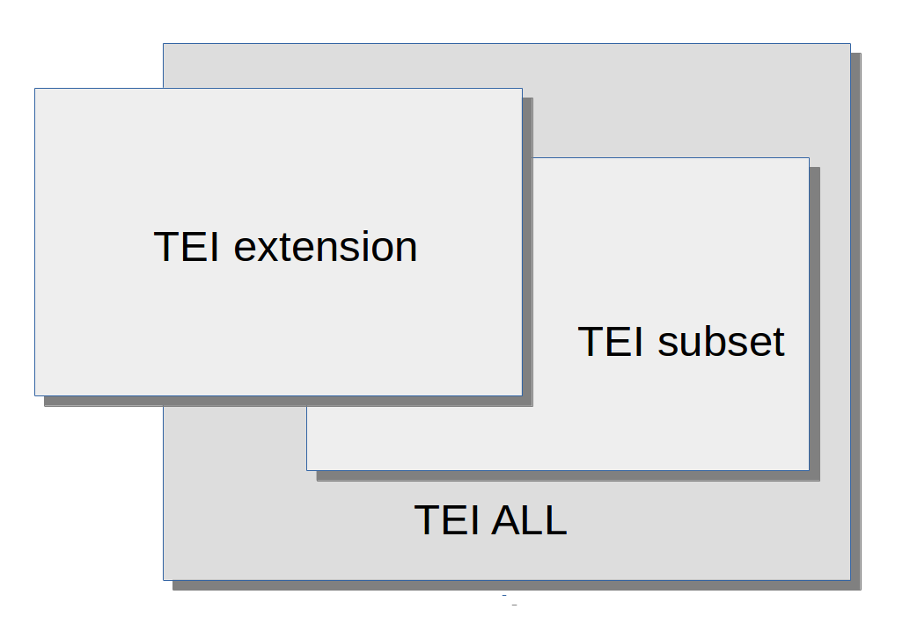

![[Put logo here]](media/logo.png)
An introduction to ODD and ODD Chaining
Lou Burnard
Taming the TEI Tiger: an ODD story
Customising the TEI is a way of adapting its powerful general purpose architecture to the more constrained and limited objectives of a specific project.
- TEI customizations are expressed (of course) in TEI ...
- ... using a special TEI customization which we call ODD
Why might you need an ODD?
- You are planning to produce valid XML resources ...
- so you will need to define an XML schema to describe them
- You need to provide documentation about
- the semantics of your XML schema
- constraints, usage notes, examples
- You need to keep the two in step
- You want to share the results
- with others
- with yourself, long term
- you don't want to reinvent the wheel
This applies whether or not you are using the TEI!
ODD : the basic notion
One Document Does it all
A special XML vocabulary (defined by the TEI) for specifying....
- schemas
- XML element types independent of a particular schema language
- public or private groupings of such elements
- patterns (macros)
- classes (and subclasses) of element
- data constraints
And also for specifying references which can pull into a schema
- named components from the above list
- objects from other namespaces
All closely integrated with a set of traditional document markup elements
Basic ODD components for schema definition
- <schemaSpec>
- Defines and identifies a schema
- <elementSpec>
- Provides some or all of an element specification, new or existing
- <elementRef>
- References an existing element specification
- <classSpec>, <classRef>
- Likewise, for classes
- <attDef>, <attRef>
- Likewise, for attributes
- <moduleRef>
- References an existing ‘module’ i.e. a group of predefined elements and attributes, entirely or partially
A simple example
Our markup uses a <book> element, which contains a mixture of <para>s and <picture>s. We have never heard of the TEI and we don't want to use it.
<schemaSpec ns="" start="book"
ident="bookSchema">
<elementSpec ident="book">
<desc>Root element for a very simple schema</desc>
<content>
<alternate maxOccurs="unbounded">
<elementRef key="para"/>
<elementRef key="picture"/>
</alternate>
</content>
</elementSpec>
</schemaSpec>
A simple example, contd.
<elementSpec ident="para">
<desc>paragraph of running text</desc>
<content>
<textNode/>
</content>
</elementSpec>
<elementSpec ident="picture">
<desc>empty element pointing to a graphic file</desc>
<content>
<empty/>
</content>
<attList>
<attDef ident="href">
<desc>supplies the URI of the object pointed at</desc>
<datatype>
<rng:data type="anyURI"/>
</datatype>
</attDef>
</attList>
</elementSpec>
So what?
- We have all the information needed to build a schema in RELAX NG, W3C schema, or DTD language by a simple XSLT transformation
- We can also extract documentary fragments (e.g. the descriptions of elements and attributes)
TEI provides a special element for the latter purpose:
<specList>
<specDesc key="para"/>
<specDesc key="picture"/>
</specList>
which would generate something like
- <para>
- textual element in a very simple schema (may have pictures in it)
- <picture>
- Empty element to point at a picture
inside our running text
Defining a model class
In the real world, the elements that can appear inside a <book> are likely to be many and various. It's convenient therefore to have a way of talking about all of them: in ODD, we say that all such elements are members of a model class.
We use the
<classes> element to record an element's membership in a class:
<elementSpec ident="para">
<classes>
<memberOf key="bookPart"/>
</classes>
</elementSpec>
And for completeness, here's a definition for the bookPart class.
<classSpec ident="bookPart" type="model">
<desc>the elements of this class all represent top-level parts of a book</desc>
</classSpec>
Using a model class
Rather than say that a <book> contains <para> elements (and other things), we can now say that it contains members of the bookPart class.
<elementSpec ident="book">
<desc>Root element for a very simple schema</desc>
<content>
<classRef key="bookPart" minOccurs="1"
maxOccurs="unbounded"/>
</content>
</elementSpec>
(When we realise that books can also contain <list>s this will save time!)
Defining an attribute class
In the real world, it's also likely that several elements will have the same attributes. It's convenient therefore to define them once only: in ODD we say all elements with some attributes in common are members of an
attribute class, which we define like this:
<classSpec ident="pointing" type="atts">
<desc>elements of this class all have an href attribute</desc>
<attList>
<attDef ident="href">
<desc>supplies a URI for the object pointed at</desc>
<datatype>
<rng:data type="anyURI"/>
</datatype>
</attDef>
</attList>
</classSpec>
Controlling attribute values
- The value of an attribute can be specified just by referring to an externally defined datatype such as
anyURI or ID (these are W3C defined standards) - We can also supply and document our own list of required or recommended values using the <valList> element
For example...
<classSpec ident="bookAtts" type="atts">
<desc>this class defines the attributes that can appear on any element inside a book</desc>
<attList>
<attDef ident="xml:id">
<desc>provides a unique identifier for an element</desc>
<datatype>
<rng:data type="ID"/>
</datatype>
</attDef>
<attDef ident="status">
<desc>indicates the correction status of this element </desc>
<valList>
<valItem ident="red"/>
<valItem ident="green"/>
<valItem ident="unknown"/>
</valList>
</attDef>
</attList>
</classSpec>
What else might you want to say about your elements?
- Additional glosses and descriptions, perhaps in different languages
- Usage examples
- More sophisticated constraints
- complex content models
- contextual dependencies
Plus other documentary features : versioning, cross references, ontological mappings ...
Alternative descriptions and glosses
<elementSpec ident="para">
<gloss>paragraph</gloss>
<desc>marks paragraphs in prose.</desc>
<desc xml:lang="zh-tw">標記散文的段落。</desc>
<desc xml:lang="ja"> 散文の段落を示す． </desc>
<desc xml:lang="fr">marque les paragraphes dans un texte en prose.</desc>
<desc xml:lang="es">marca párrafos en prosa.</desc>
<desc xml:lang="it">indica i paragrafi in prosa</desc>
</elementSpec>
Usage examples
Documenting an XML schema requires the inclusion of examples in XML. If your documentation is also in XML, you need to be a little devious. There are three possible approaches:
- hide everything within a CDATA marked section
- Escape everything using entity references
- Use a different name space
The last has the great advantage that you can validate your examples against an XML schema
Examples
<eg><![CDATA[<p>A paragraph</p> ]]></eg>
<eg>
<code lang="XML">&lt;p>A paragraph&lt;/p></code>
</eg>
<egXML
xmlns="http://www.tei-c.org/ns/Examples">
<p>A paragraph</p> </egXML>
Defining a content model
The <content> element can contain
- Nothing at all <empty/>
- References to other elements <elementRef>
- References to classes of element <classRef>
- Alternations of the foregoing <alternate>
- Sequences of the foregoing <sequence>
Attributes minOccurs and maxOccurs can be used to control repetition
For example:
<content>
<alternate>
<elementRef key="para" minOccurs="2"
maxOccurs="unbounded"/>
<elementRef key="bob"
maxOccurs="unbounded"/>
</alternate>
</content>
Is your journey really necessary ?
The TEI defines elements very like yours. Why not use the TEI?
<schemaSpec source="http://www.tei-c.org/release/xml/tei/odd/p5subset.xml"
start="div" ident="teiBook">
<elementRef key="div"/>
<elementRef key="p"/>
<elementRef key="graphic"/>
<elementRef key="figure"/>
<moduleRef key="tei"/>
</schemaSpec>
The <moduleRef> here provides definitions for the TEI infrastructure, notably the classes and datatypes used throughout every TEI schema. Apart from that we just need to specify the TEI elements we want to use, by means of an <elementRef>.
The source attribute indicates where the referenced specifications are to be found
Schematron constraints
- An element spec may also include one or more <constraintSpec> elements, which contain additional constraints of any kind, expressed in the ISO Schematron language
- In TEI we use these to express additional semantic or co-occurrence constraints that cannot be expressed in any schema language
- Not all XML processing systems take notice of these (but oXygen does).
- They are also useful when implementing Pure ODD constructs that cannot be expressed in the target schema language
<elementSpec ident="div"
module="teistructure" mode="change"
xmlns:s="http://purl.oclc.org/dsdl/schematron">
<constraintSpec ident="div"
scheme="isoschematron">
<constraint>
<s:assert test="@type='prose' and .//tei:p"> a prose div should contain at least one
paragraph</s:assert>
</constraint>
</constraintSpec>
</elementSpec>
ODD Compilation
A single ODD may contain two types of object:
- an explicit specification (e.g. an <elementDecl>), partial or complete
- a reference to such a specification
Note also that a single ODD may combine two or more partial specifications for a given object.
The source attribute indicates an ODD in which
- all references have been resolved, and replaced by the declarations concerned
- all partiel declarations for the same object have been resolved
We call this process "compilation" and it is carried out by the XSLT stylesheet odd2odd
Using a compiled ODD
A compiled ODD can serve as the basis for further modifications. In this example, we start from a compiled version of the TEI-bare schema.
In this example, we suppress the <head> element:
<schemaSpec ident="Bare-minus"
source="tei_bare.compiled.odd" start="TEI">
<moduleRef key="tei"/>
<moduleRef key="header"/>
<moduleRef key="core" except="head"/>
<moduleRef key="textstructure"/>
</schemaSpec>
And in this one, we add the contents of the module gaiji
<schemaSpec ident="Bare-plus"
source="tei_bare.compiled.odd" start="TEI">
<moduleRef key="tei"/>
<moduleRef key="header"/>
<moduleRef key="gaiji"
source="http://www.tei-c.org/release/xml/tei/odd/p5subset.xml"/>
<moduleRef key="textstructure"/>
</schemaSpec>
Note that we can only suppress or obtain items already supplied by the compiled ODD specified in the source attribute
- we define a base ELTeC ODD which declares everything required for the union of each of the three schemas, and supplies some general constraints
- we compile this base ODD to create a TEI library, analogous to the "p5subset" supplied with TEI P5
- each ELTeC level is then defined by a separate ODD, which selects a subset from that library
Source at https://github.com/COST-ELTeC/Schemas/tree/master/ODD
Types of ODD (1)

each box here represents :
- an ODD
- the schema derived from that ODD
- the set of documents considered valid by that schema
TEI All contains every element (etc) defined by the TEI.
- a ‘TEI subset’ provides only a (possibly restricted) subset of TEI All
- a ‘TEI extension’ provides some components which do not appear in TEI All
The $1000k question: is my TEI extension conformant?
The short answer
Yes, provided that...
- (in the case of a subset) : your modifications generate a more focussed schema, better adapted to your project, and documentation more meaningful to your envisaged community;
- your documents are also still valid according to TEI All and respect the semantics defined by the TEI conceptual model;
- (for an extension) : non-TEI components are explicitly signalled, for example by use of a different namespace, and documented in your ODD, for example by using TEI classes, the <equiv> element etc.
So what does it mean to be ‘TEI conformant’ ?
- be honest : XML elements declared within the TEI namespace must respect the existing TEI definitions for those elements (e.g. <l>)
- be explicit : an ODD is a very good way of keeping you honest. Producing one requires you to document and make evident all the changes you have made.
Validity of a document with respect to a TEI schema (TEI All, subset, or extension) is a good sign -- but it does not guarantee conformance
The requirement to ‘respect the TEI-defined semantics TEI’ implies a test that cannot be readily automated.
The limits of modification
- Can you delete everything? you may not want <title> in your text, but it is mandatory in the header
- Can you add anything ? it may be convenient to add (e.g.) elements from the Dublin Core to your header, even though their semantics overlap with existing TEI elements
- The purpose of these conformance rules is to make ‘blind interchange’ simpler; but they don't guarantee it.
- Their goal is to allow a user to understand your encoding, but not necessarily to force them to follow your practice blindly
See also What is TEI Conformance? (https://journals.openedition.org/jtei/1777)
Useful links
- Reference documentation
- Tutorial materials
- Background reading